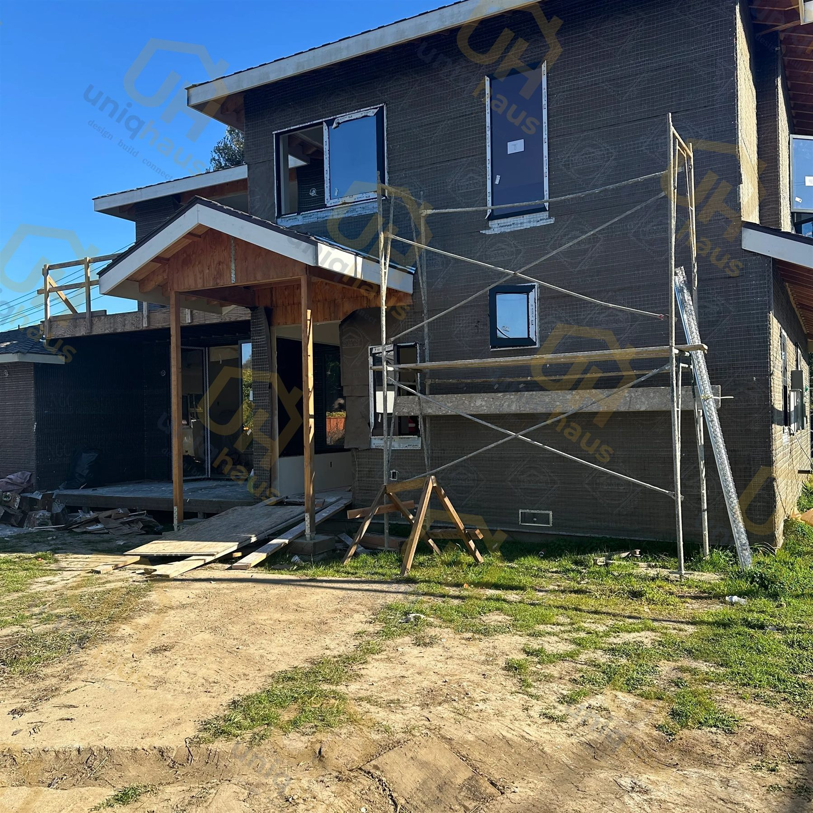
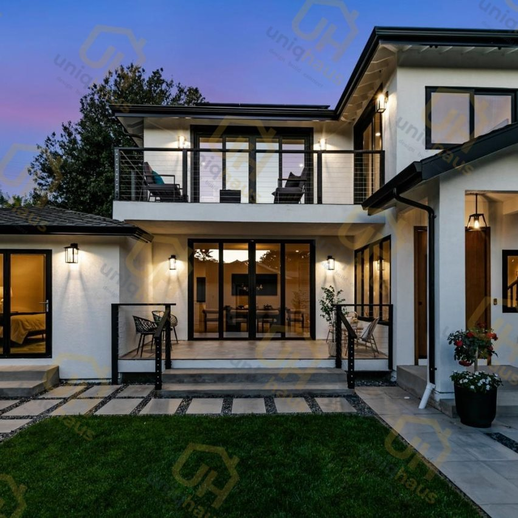
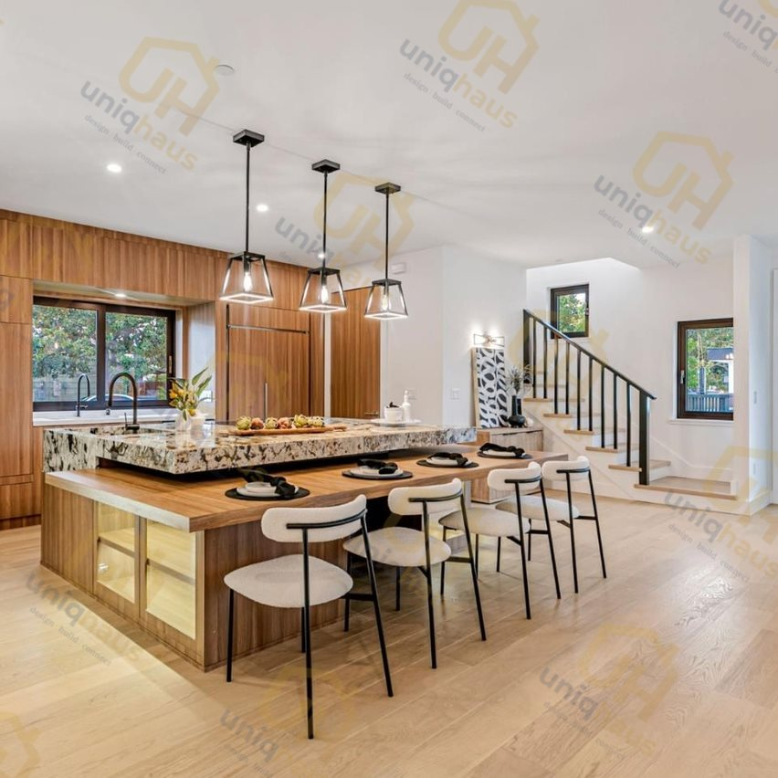
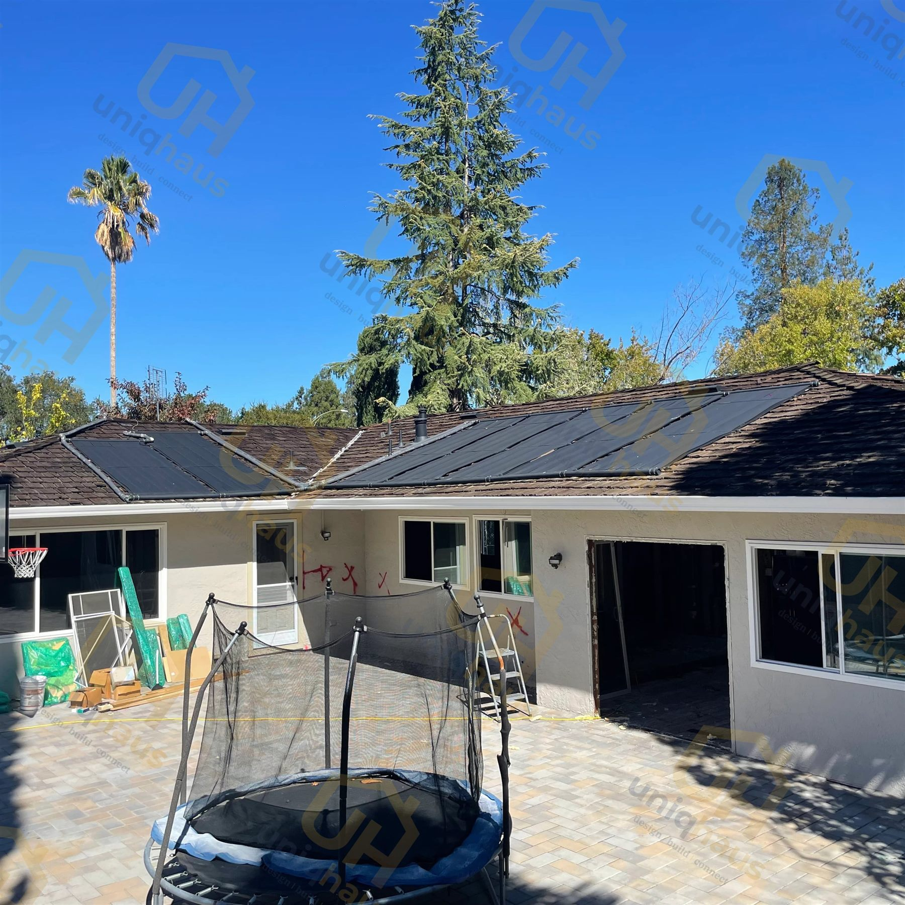
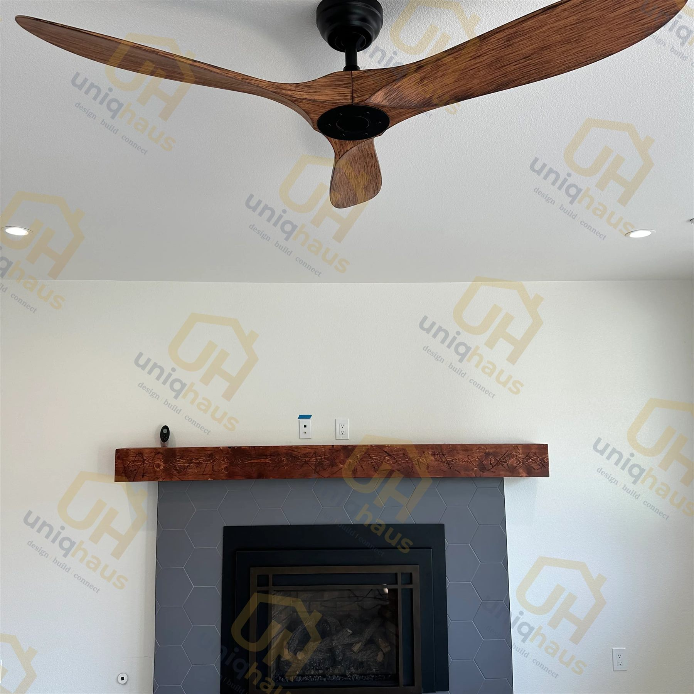

QUICK ANSWER
Whole House Remodel Before & After
A whole house remodel transforms a home on every level at once - the exterior and roofline, the kitchen and bathrooms, the floor plan and flow, the finishes throughout, and the hidden systems behind the walls. The most dramatic before-and-after changes come from three moves: reworking the exterior, opening the floor plan for light, and rebuilding the kitchen. Below are real Bay Area transformations, plus what it takes to get results like these.
Before-and-after photos are the fastest way to understand what a whole house remodel actually delivers. A dated, closed-in home becomes bright and open; a tired exterior gains a modern, well-proportioned face; a cramped kitchen turns into the center of the house. This guide walks through real Bay Area whole-home transformations from our portfolio, points out exactly what changed in each, and connects the visible result back to the budget and timeline behind it. For the numbers, pair it with our whole house remodel cost in San Jose guide and the broader whole house remodel service.
What changes in a whole house remodel
A whole house remodel is not one project - it is every category of the home updated together, which is why the before-and-after is so striking. The table below shows the layers that change and which ones drive the visual transformation you see in photos.
| Layer | Before | After |
|---|---|---|
| Exterior & roofline | Dated facade, mismatched additions | Cohesive, modern, well-proportioned face |
| Floor plan | Closed-off rooms, dark centers | Open flow, natural light throughout |
| Kitchen | Small, walled-in, dated finishes | Open, functional centerpiece of the home |
| Bathrooms | Cramped, worn fixtures | Spa-like, current fixtures and tile |
| Finishes | Inconsistent, room by room | One consistent palette across the home |
| Systems (hidden) | Aging wiring, plumbing, insulation | New, to current code - the part you never see |
The last row matters more than it looks. In older Bay Area homes, a large share of the budget goes into systems you will never photograph - and skipping that work is exactly what separates a lasting remodel from a cosmetic one. The visible transformation sits on top of that foundation.
Before & after: Curtiss Ave, San Jose
The Curtiss Ave home in San Jose is a clear example of an exterior transformation. The before is a dated single-story house with a closed, low-curb-appeal front; the after reworks the facade, entry, and proportions into a clean, modern street presence while keeping the home's footprint and structure.


Exterior-led transformations like this one are among the highest-impact moves in a whole house remodel because the front of the home sets the tone for everything inside. Curb appeal is also one of the better returns on a remodel budget, which is why it often leads the project rather than being an afterthought.
During & after: Hawthorne Ave, Campbell
The Hawthorne Ave Whole-House Renovation in Campbell shows the full arc of a whole-home project - from active construction to a finished two-story home with a modern exterior, black-framed windows, and an open, light-filled interior. The during-construction photo is a reminder that the visible result is the final phase of months of structural, systems, and finish work.


Inside, the same project delivered a bright, open kitchen and living area - the payoff of an opened floor plan that lets light travel across the main level.

During & after: Bel Blossom
The Bel Blossom project is another whole-home renovation captured from framing through finish. The during photo shows the home mid-transformation; the after shows a warm, finished living space with a modern fireplace as the focal point - the kind of interior character that only reads once the finishes, lighting, and proportions come together.


Browse more finished whole-home projects in the full project portfolio, where you can compare interiors, kitchens, and exteriors across homes like Frostwood, Delvin, and Bel Blossom.
What makes a before-and-after dramatic
Not every remodel photographs the same way, and the difference is rarely about spending more - it is about a handful of high-leverage decisions:
- Lead with the exterior. The facade, entry, and roofline set the first impression, so a coherent exterior does more visual work than any single interior room.
- Open the plan for light. Removing the right walls lets daylight reach the center of the home - the single biggest reason an "after" feels larger without adding square footage.
- Make the kitchen the centerpiece. On a whole-home project the kitchen carries the most weight, both in budget and in the finished look.
- Use one finish palette. Consistent flooring, paint, and fixtures across the home make it read as one designed project instead of a series of updates.
- Design it before you build it. Seeing the home in 3D before demo is how these decisions get made deliberately rather than on the fly - the core of our design package.
What it costs and how long it takes
Transformations like these are the result of a real budget and timeline, not a weekend. A whole house remodel in San Jose runs about $150,000 to $600,000 or more in 2026 for a typical home, and about 4 to 9 months from design through permitting and construction, with a full down-to-studs gut taking longer. The level of change you see in the after photos scales directly with that budget - a cosmetic refresh updates surfaces, while a deeper remodel reworks structure, systems, and layout.
For the full breakdown, see our whole house remodel cost guide and the construction and remodel timeline. And if you are weighing whether to transform your current home or start over, our remodel vs rebuild guide walks through that decision.
UniqHaus is a San Jose design-build studio that carries a whole-home project from first sketch to final inspection - architecture, interior design, 3D visualization, permitting, and construction under one roof. Homeowners in San Jose and across the Bay Area can see how we work, and when you are ready to plan your own transformation, the next step is a conversation - start a conversation with UniqHaus.
Frequently Asked Questions
What does a whole house remodel change?
A whole house remodel transforms the exterior, the kitchen and bathrooms, the floor plan and flow, the finishes throughout, and the hidden systems like wiring, plumbing, and insulation. The most visible before-and-after changes are usually an updated exterior, an opened-up floor plan that brings in light, and a fully rebuilt kitchen.
What adds the most visual impact in a whole house remodel?
The biggest visual impact usually comes from three moves: refreshing or reworking the exterior and roofline, opening the floor plan so light travels through the home, and rebuilding the kitchen as the centerpiece. New flooring and a consistent finish palette throughout then tie every room together so the whole home reads as one project rather than a set of updates.
How long does a whole house remodel take to get these results?
A whole house remodel in San Jose runs about 4 to 9 months from design through permitting and construction, and a full down-to-studs gut takes longer. Design and permitting happen before demolition, so the visible transformation is the last phase, not the first.
How much does a whole house remodel cost in San Jose?
A whole house remodel in San Jose costs roughly $150,000 to $600,000 or more in 2026 for a typical 1,500 to 2,500 sq ft home, about $100 to $500 per square foot depending on how deep the work goes. The level of transformation you see in before-and-after photos scales directly with that budget.
Do you have before and after photos of whole house remodels?
Yes. UniqHaus is a San Jose design-build studio and our portfolio includes whole-home transformations across the Bay Area, including the Curtiss Ave home in San Jose, the Hawthorne Ave Whole-House Renovation in Campbell, and the Bel Blossom project. You can browse finished projects in the portfolio.
Key Takeaways
- A whole house remodel changes every layer at once - exterior, floor plan, kitchen, baths, finishes, and hidden systems - which is why the before-and-after is so striking.
- The most dramatic transformations lead with the exterior, open the plan for light, and rebuild the kitchen as the centerpiece.
- Real Bay Area examples: an exterior transformation on Curtiss Ave in San Jose, the Hawthorne Ave whole-house renovation in Campbell, and the Bel Blossom project.
- Results like these take about $150K-$600K+ and 4 to 9 months in San Jose; the depth of change scales with the budget.
NEXT STEP
Ready to plan your own transformation?
UniqHaus handles architecture, interior design, 3D visualization, permitting, and construction as one team. Tell us about your home and goals and we will map a realistic before-and-after, budget, and timeline.